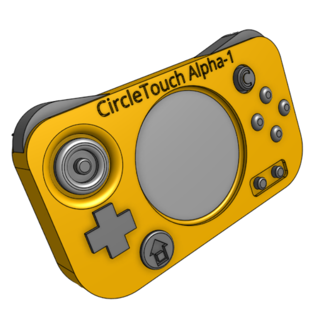

Products
Jumbo King-Mackerel CircleTouch Alpha-1 Controller - Preorder Now!
Features:
- Resistive Touchscreen Technology utilizing CircleTouch technology!
- Customizable Backgrounds using SVG, PNG, any other image file!
- 3DS-style Analog Circlepad with central button!
- Analog C-Stick for additional inputs!
- Hall Effect Bumpers
- Rechargable Battery Life of 30 hours!
- Compatible with all Alpha-series Battery Plus Modules!
- Compatible with Jai-Row, Trackypad, Scrollster, and Gamer Pro Modules!
- Multiple basic shell color options!
- Multiple camo shell color options!
- Multiple button color options!
What You Get:
- 1 Jumbo King-Mackerel CircleTouch Alpha-1 Controller
- 1 USB-A Bluetooth Reciever
- 1 User Manual
- 1 Warranty Form
- 3 Raffle Tickets to be used in any Jumbo K-Mack Sweepstakes
Jumbo King-Mackerel CircleTouch Pro Alpha-1 Controller - Preorder Now!
Features:
- Resistive Touchscreen Technology utilizing CircleTouch technology!
- Customizable Backgrounds using SVG, PNG, any other image file!
- 3DS-style Analog Circlepad with central button!
- Analog C-Stick for additional inputs!
- Hall Effect Bumpers
- Rechargable Battery Life of 28 hours!
- Compatible with all Alpha-series Battery Plus Modules!
- Compatible with Jai-Row, Trackypad, and Scrollster modules!
- Multiple basic shell color options!
- Multiple camo shell color options!
- Multiple button color options!
- Built-in Gamer Pro technology!
What You Get:
- 1 Jumbo King-Mackerel CircleTouch Alpha-1 Controller
- 1 USB-A Bluetooth Reciever
- 1 User Manual
- 1 Warranty Form
- 3 Raffle Tickets to be used in any Jumbo K-Mack Sweepstakes